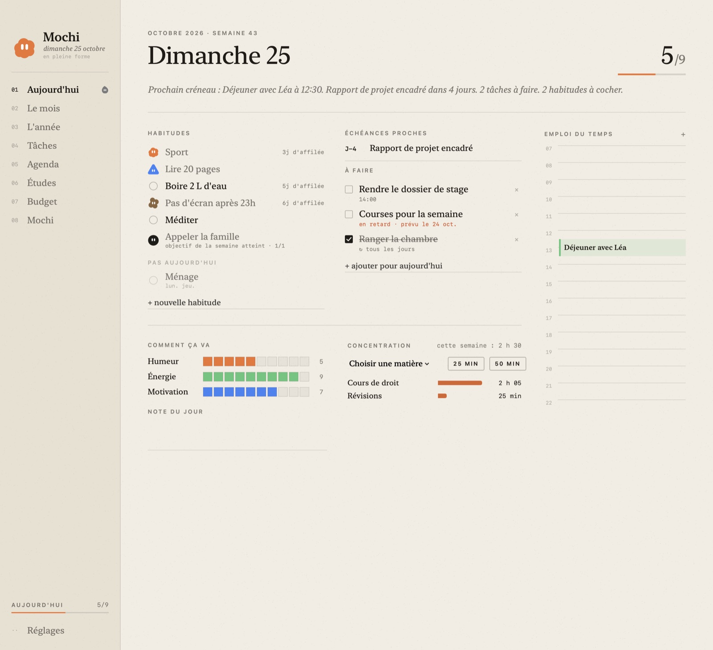
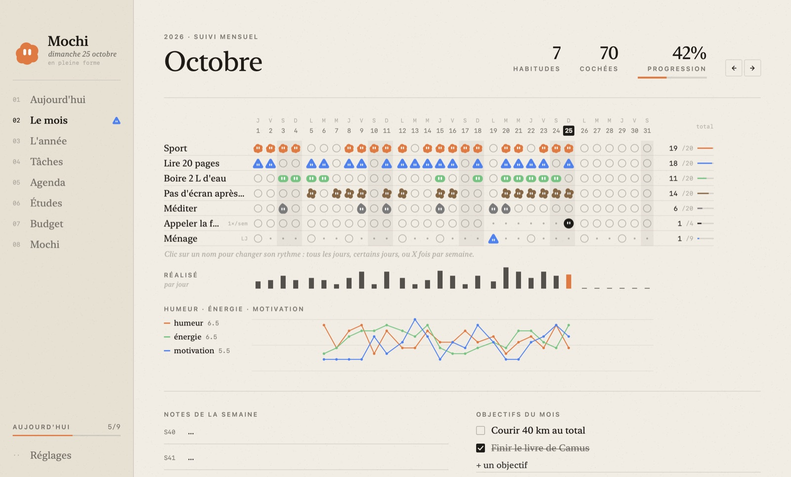
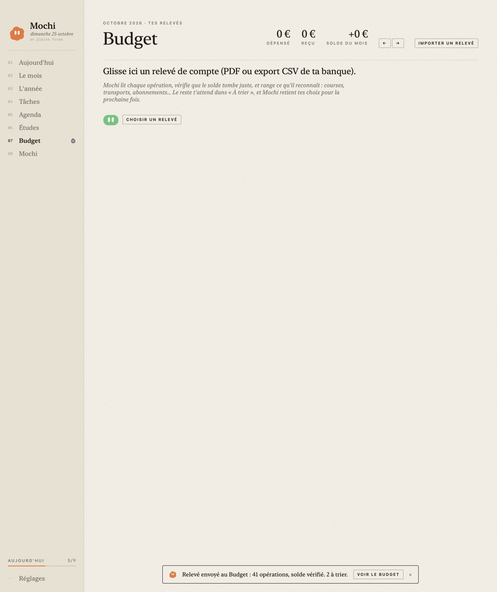

Un petit compagnon qui vit sur ton Dock. Il tient tes habitudes, ton agenda, tes partiels et ton budget, et il change de mine selon ta semaine.
↓ Télécharger Mochi
Tous les jours, certains jours, ou trois fois par semaine. Une grille mensuelle comme dans un bullet journal.
À l'ouverture du Mac : la météo, ton premier cours et sa salle, les partiels à J-5. Puis humeur, énergie, motivation.
Ton emploi du temps importé depuis le PDF, partiels, devoirs, candidatures, et un minuteur de concentration par matière.
Glisse ton relevé bancaire : les dépenses sont classées, et les graphiques montrent où passe ton argent.
Depuis n'importe quelle app : « réviser maths jeudi 18h ». C'est noté. Appuie deux fois pour dicter.
Une lettre à toi-même, scellée jusqu'au jour choisi : après les partiels, dans six mois, dans un an.


Mochi fonctionne entièrement sans IA. Pour lui parler (« organise ma semaine », « range ce relevé »), branche le service de ton choix : une clé NVIDIA gratuite, Claude, OpenAI, Mistral, Groq, OpenRouter, Gemini, ou une IA qui tourne sur ton Mac avec LM Studio ou Ollama.
Tout reste sur ton Mac. Seule ta demande à l'assistant part vers le service que tu as choisi.
Reçu par WhatsApp et macOS refuse de l'ouvrir ? Télécharge-le plutôt ici. Sinon, dans le Terminal : xattr -dr com.apple.quarantine /Applications/Mochi.app